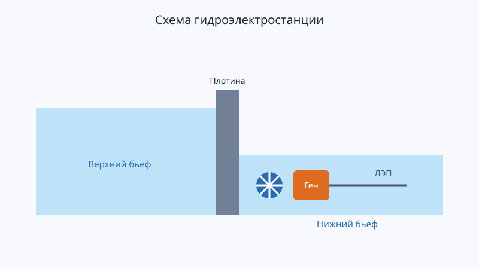
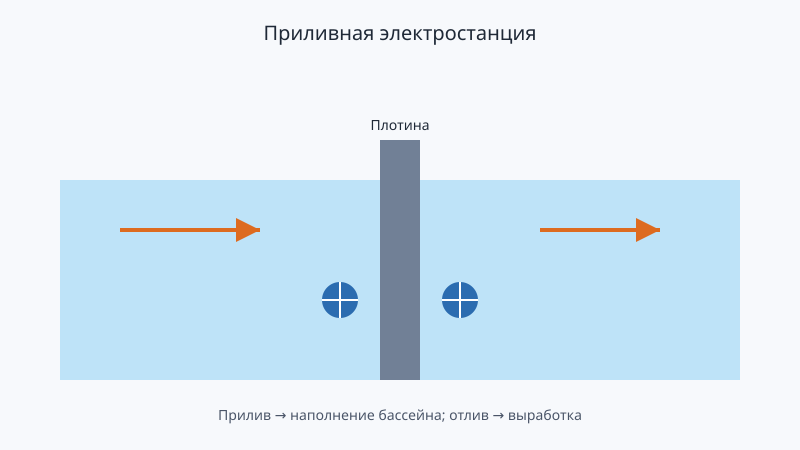

Глава 4. Энергия рек, морей и океанов
4.1 Гидроэнергетика рек
Гидроэнергетика — область энергетики, использующая энергию водных потоков (рек, морей, океанов) для выработки электрической энергии. Это одно из наиболее зрелых направлений возобновляемой энергетики.
Основным объектом гидроэнергетики является гидроэлектростанция (ГЭС) — электростанция, преобразующая энергию водного потока в электрическую с помощью гидротурбин и генераторов. Мощность ГЭС зависит от напора воды и расхода.
Для балансировки выработки и потребления используются гидроаккумулирующие электростанции (ГАЭС), перекачивающие воду в верхний бассейн при избытке энергии и вырабатывающие электричество при её дефиците.

Гидроэнергетика характеризуется высоким КПД, длительным сроком службы оборудования и низкими эксплуатационными затратами, однако требует значительных капитальных вложений и оказывает влияние на водные экосистемы.
4.2 Энергия морей и океанов
Помимо рек, значительный потенциал сосредоточен в энергии морей и океанов. К основным направлениям относятся приливная, волновая и термальная энергетика.
Приливная электростанция (ПЭС) использует энергию морских приливов и отливов. Режим работы ПЭС предсказуем, что является её важным преимуществом.
Волновая энергетика преобразует энергию морских волн в электрическую энергию. Океаническая термальная энергия (OTEC) основана на использовании разности температур поверхностных и глубинных вод океана.

Морская энергетика пока уступает речной по масштабам внедрения, но рассматривается как перспективное направление, особенно для прибрежных регионов.
4.3 Перспективы и ограничения
Развитие гидроэнергетики и морской энергетики связано как с возможностями, так и с ограничениями.
- Ресурсная база — речной потенциал во многом уже освоен, тогда как морская энергетика располагает значительным неиспользованным потенциалом.
- Капитальные затраты — строительство плотин и морских установок требует крупных инвестиций.
- Экологические ограничения — влияние на водные экосистемы, миграцию рыб, прибрежные ландшафты.
- Балансировка — ГАЭС играют ключевую роль в интеграции нестабильных ВИЭ в энергосистему.
Наибольший эффект достигается при комплексном использовании водных ресурсов — с учётом энергетических, экологических и социальных факторов.

Проверка знаний
-
Что такое гидроэнергетика?
Область энергетики, использующая энергию водных потоков (рек, морей, океанов) для выработки электрической энергии.
-
Чем занимается гидроаккумулирующая электростанция (ГАЭС)?
Перекачивает воду в верхний бассейн при избытке энергии и вырабатывает электричество при её дефиците; используется для балансировки энергосистемы.
-
Что такое приливная электростанция (ПЭС)?
Электростанция, использующая энергию морских приливов и отливов для выработки электроэнергии.
-
На чём основана океаническая термальная энергия (OTEC)?
На использовании разности температур поверхностных и глубинных вод океана для выработки электроэнергии.
-
Назовите основные ограничения гидроэнергетики.
Высокие капитальные затраты, влияние на водные экосистемы, миграцию рыб и прибрежные ландшафты.
-
Какие направления морской энергетики вы знаете?
Приливная, волновая и термальная (OTEC) энергетика.